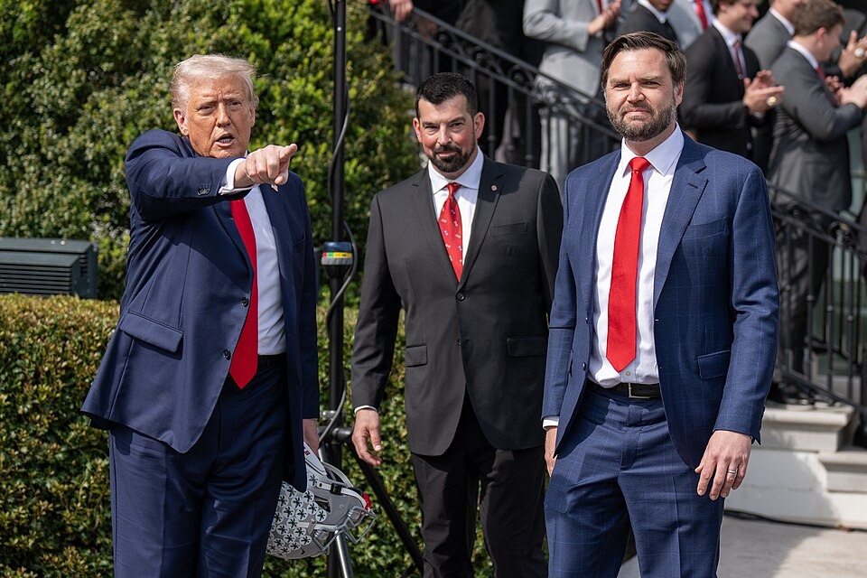
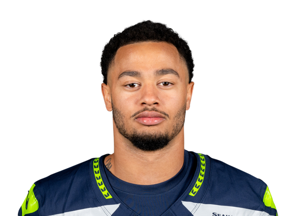

1▲2
Ben's Brilliant Team
Ben Elton3-0
150.8+27.9 vs proj · all-play 11-0

Note: Receivers, tight end and kicker all led the league.
Ben's Brilliant Team scored 150.84 and beat michael's Monstrous Team by 3.88, the closest game of the week. Jaxon Smith-Njigba led the way with 35.4. The receivers, the tight end and the kicker each finished first in the league at their position, which is the first time any team has done that this season. Three wins from three. Ryan Day was born on March 12, 1979, in Manchester, New Hampshire.

Player of the game: Jaxon Smith-Njigba, 35.4